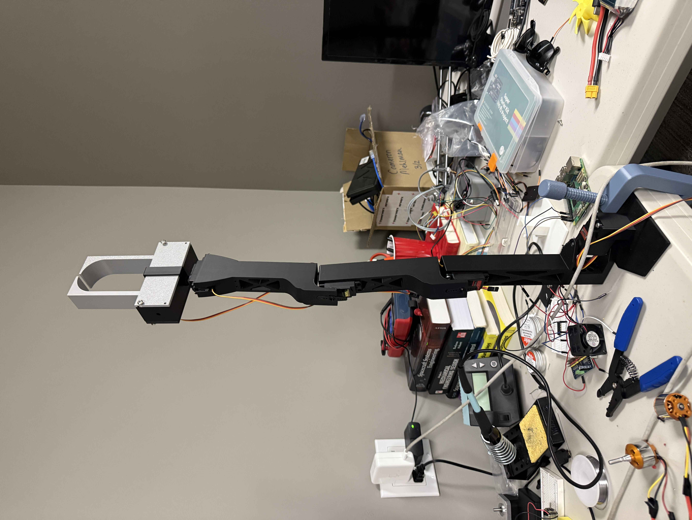
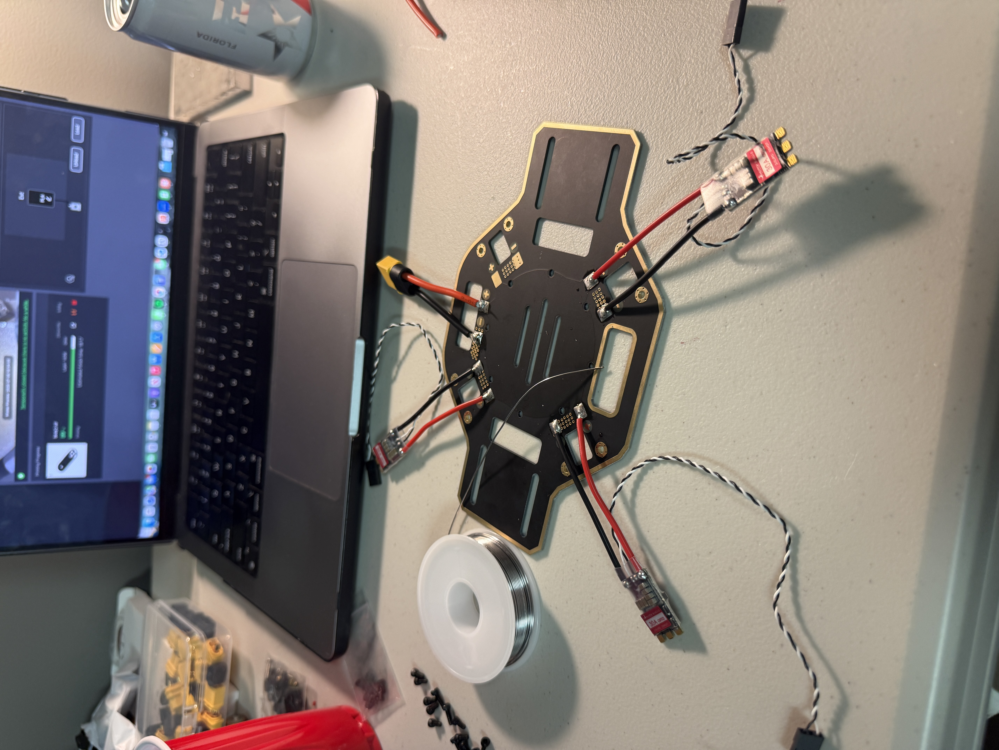

Featured projects

Robotics · Personal
6 DOF Robotic Arm — V4 (in progress)
Full-stack build: Fusion 360 CAD, Raspberry Pi 5 controller, PCA9685 PWM driver, inverse kinematics in Python, 3D printed on Bambu P2S. Currently finishing mechanical assembly.

Autonomy · Personal
Autonomous Rescue Drone (in assembly)
~24" quadcopter on ArduPilot + Pixhawk 6C Mini with Raspberry Pi companion computer running DroneKit/MAVSDK. Life-ring form factor for water rescue. Currently wiring power distribution and ESCs.

Controls · Cornell Hyperloop
Electromagnetic Levitation Controls
PID control loop for stable levitation using a ToF sensor and electromagnet driver. Full benchtop prototype with closed-loop feedback.

Mechanical Design · Cornell Hyperloop
Passivity Stability System
Spring-damper system designed and manufactured to prevent the hyperloop pod from rolling about yaw and pitch axes.

Mechatronics · Cornell
Mechatronics Robot
Autonomous robot built with Arduino, QTI sensors, and custom 3D printed parts. Integrated servo control and sensor feedback for navigation.

Dynamics · Cornell
Biomechanics Study
Modeling rigid body dynamics of human motion using Differential Algebraic Equations (DAE method) in Matlab.

Dynamics · Cornell
Analysis of Skate Constraints
Constraint analysis of a skate system using SolidWorks and rigid body dynamics methods.

Aerodynamics · Cornell
Wind Turbine Senior Design
Aerodynamic design and CFD analysis of a 3-bladed HAWT using BEM theory and ANSYS Fluent. Full 35-page report.